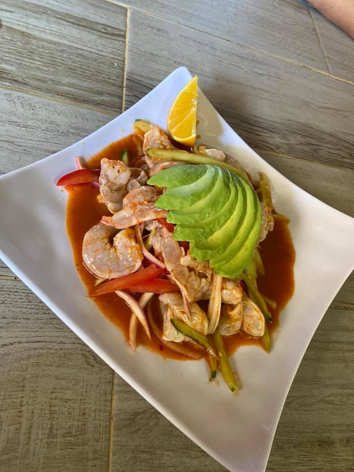
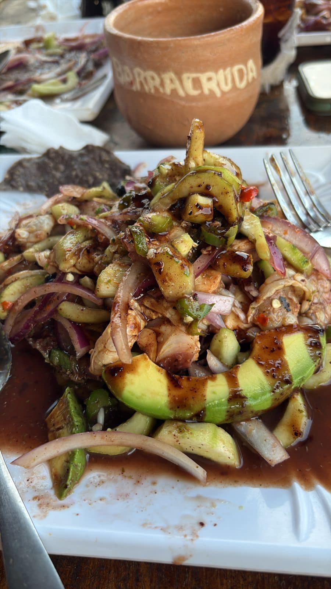
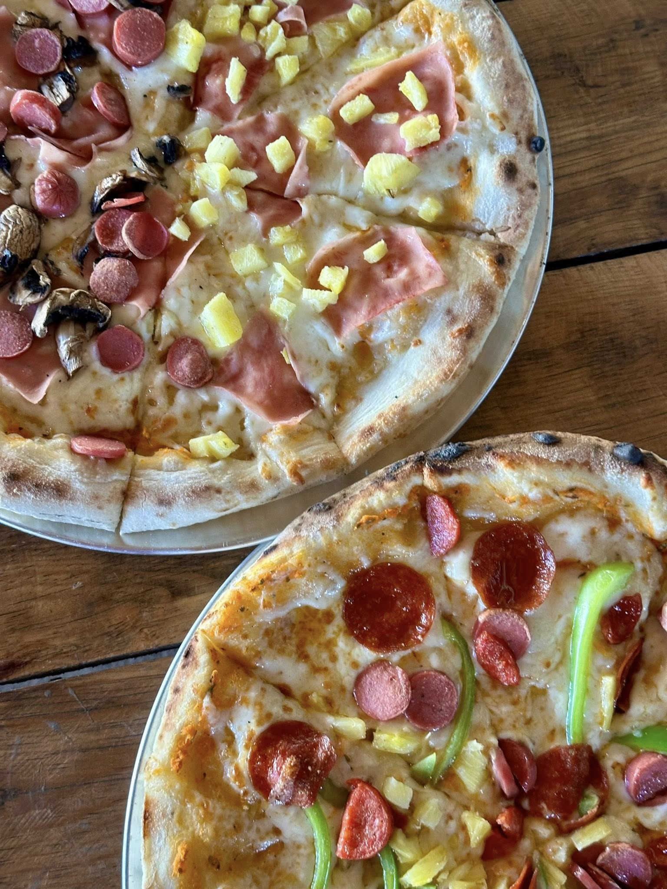
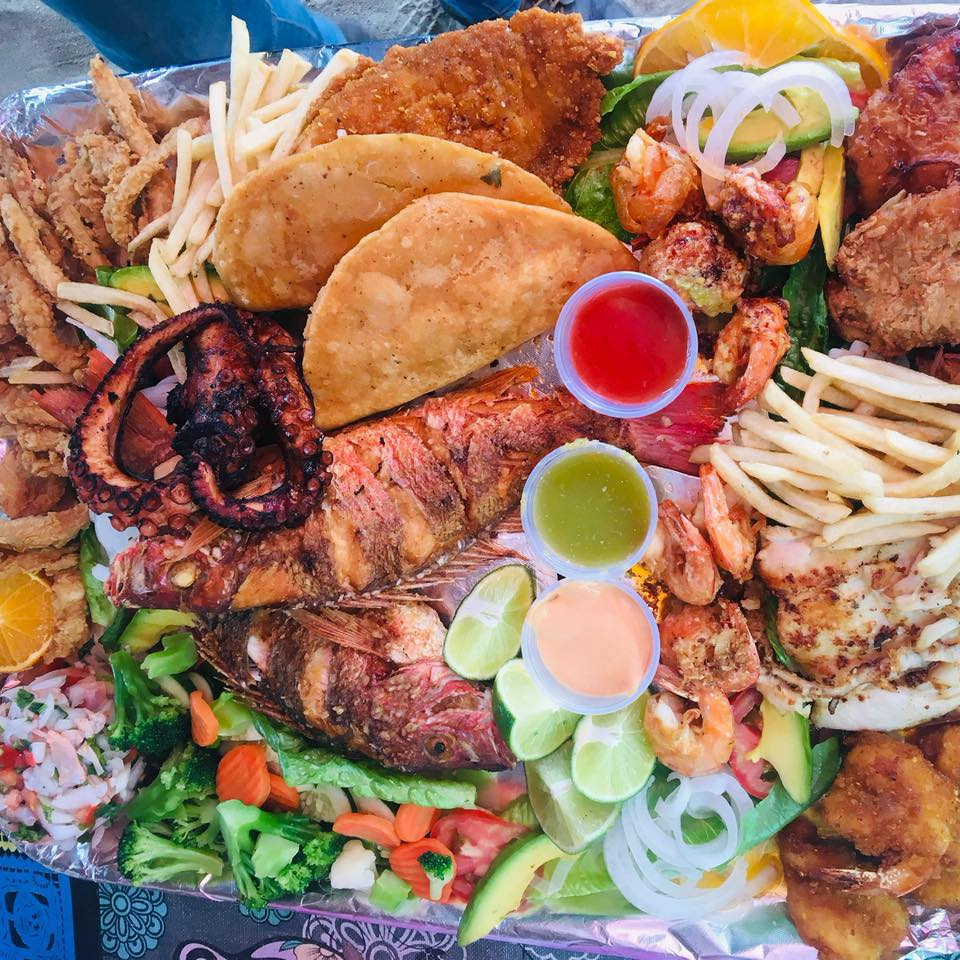
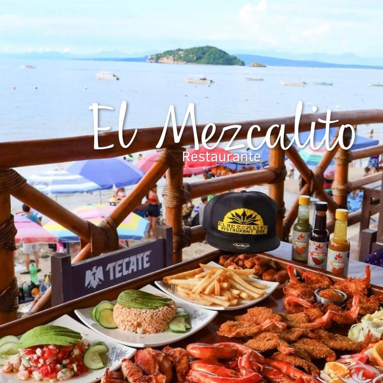
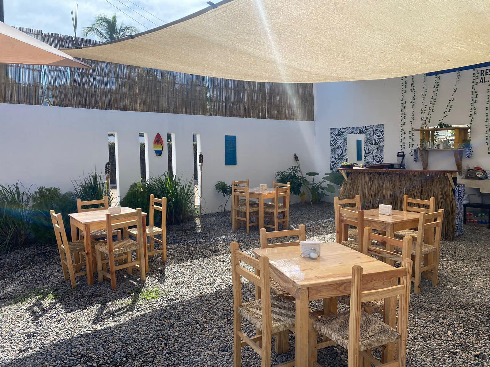
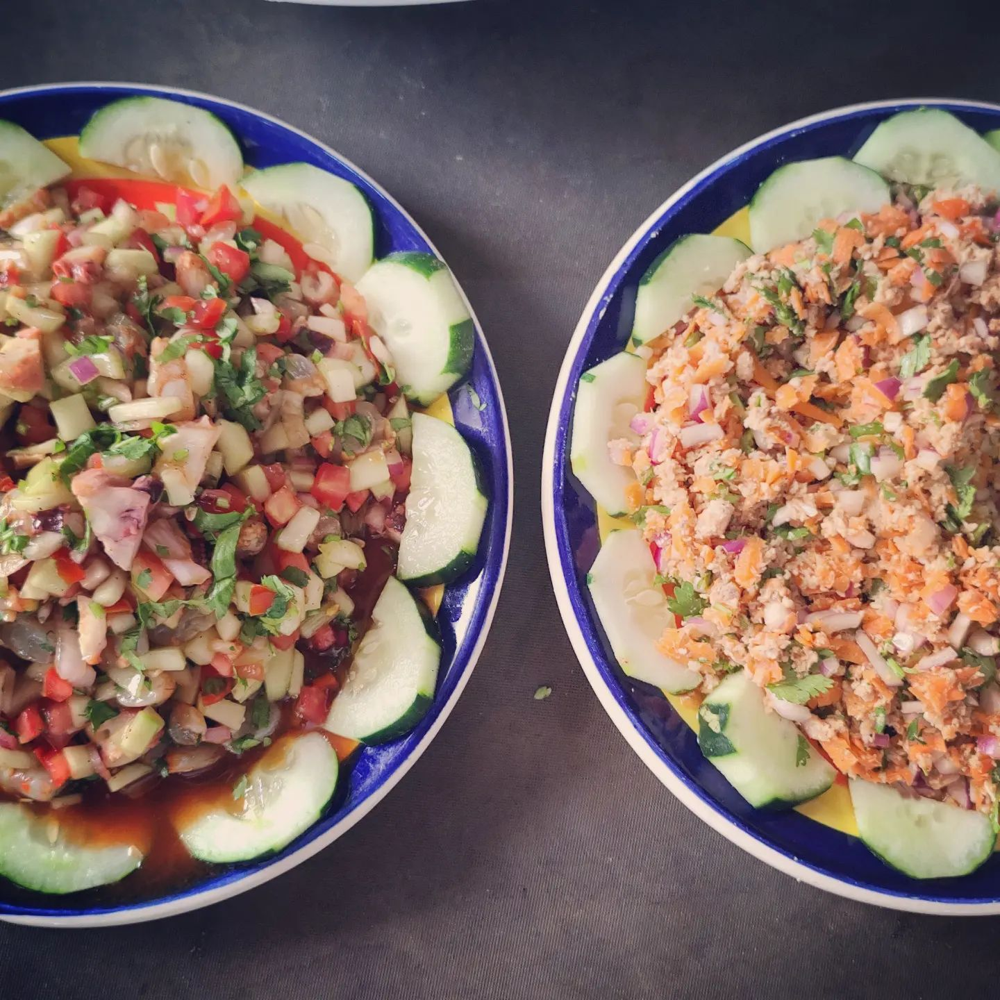

Los Corales
Restaurante frente a la playa especializado en mariscos frescos con un ambiente familiar y vista al mar.

Restaurante frente a la playa especializado en mariscos frescos con un ambiente familiar y vista al mar.

Restaurante-bar popular local con ambiente relajado. Sirven mariscos, botanas, micheladas y platillos casuales, ideal para una comida o cena informal acompañada de cerveza o cocteles.

Bar-restaurante con billar, comida casual y ambiente familiar / de bar. Ofrece platillos sencillos, bebidas y entretenimiento con mesas de billar; buena opción para cenar y pasar la tarde o noche.

Restaurante con ambiente agradable y cocina tradicional, conocido por su sazón casero y platillos mexicanos. Ideal para una comida tranquila con sabores locales. Presencia de reseñas positivas por su atención familiar.

Restaurante-bar con menú de platillos mexicanos y bebidas variadas. Lugar informal ideal para comida y bebida en un ambiente relajado.

Restaurante para disfrutar de distintos platillos.

Restaurante y bungalows frente al mar con platillos mexicanos y mariscos frescos a pie de playa.